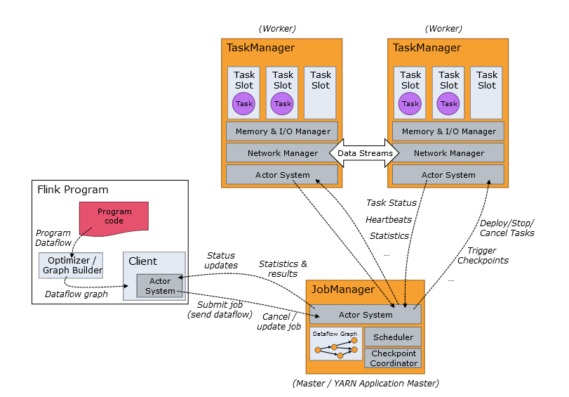
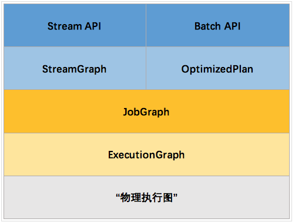
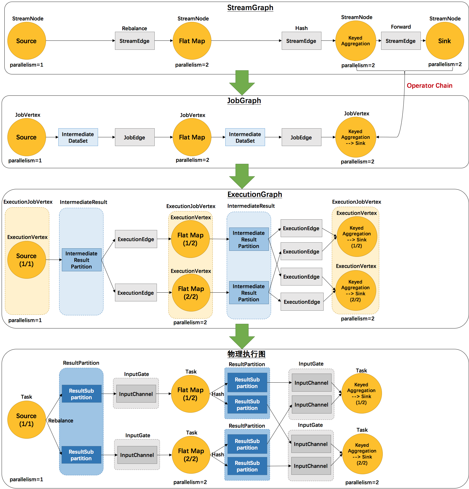
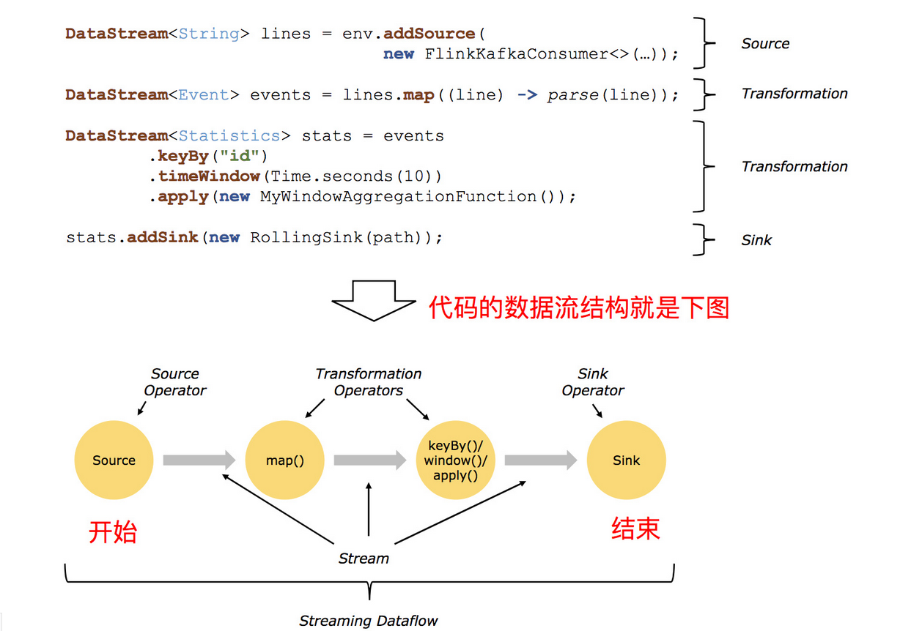
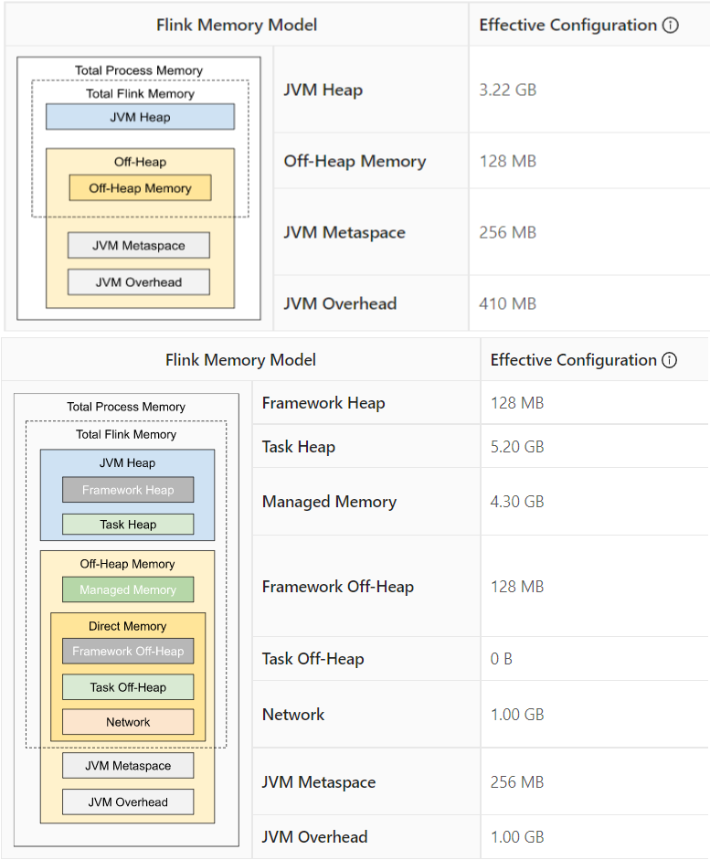
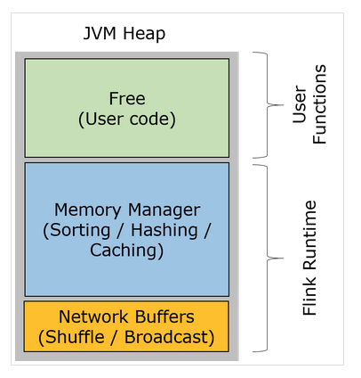
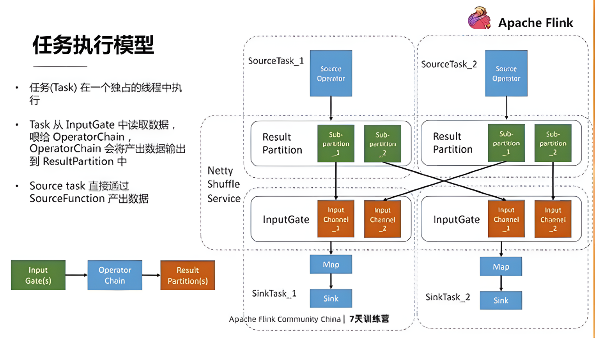
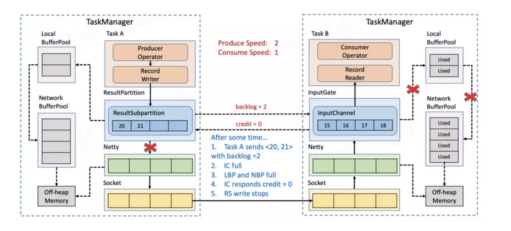

Flink 基础
集群架构
Flink 运行时由两种类型的进程组成：一个 JobManager 和一个或者多个 TaskManager。

JobManager
决定何时调度下一个 task（或一组 task）、对完成的 task 或执行失败做出反应、协调 checkpoint、并且协调从失败中恢复等等
- RegisterTaskManager: 它由想要注册到JobManager的TaskManager发送。注册成功会通过AcknowledgeRegistration消息进行Ack。
- SubmitJob: 由提交作业到系统的Client发送。提交的信息是JobGraph形式的作业描述信息。
- CancelJob: 请求取消指定id的作业。成功会返回CancellationSuccess，否则返回CancellationFailure。
- UpdateTaskExecutionState: 由TaskManager发送，用来更新执行节点(ExecutionVertex)的状态。成功则返回true，否则返回false。
- RequestNextInputSplit: TaskManager上的Task请求下一个输入split，成功则返回NextInputSplit，否则返回null。
- JobStatusChanged： 它意味着作业的状态(RUNNING, CANCELING, FINISHED,等)发生变化。这个消息由ExecutionGraph发送。
TaskManagers
TaskManager（也称为 worker）执行作业流的 task，并且缓存和交换数据流，任务执行的并行性由每个 Task Manager 上可用的Task Slot决定
Client
负责接受用户的程序代码，然后创建数据流，将数据流提交给 Job Manager 以便进一步执行。 执行完成后，Client 将结果返回给用户
Graph

StreamGraph：是根据用户通过 Stream API 编写的代码生成的最初的图。用来表示程序的拓扑结构。
JobGraph：StreamGraph经过优化后生成了 JobGraph，提交给 JobManager 的数据结构。主要的优化为，将多个符合条件的节点 chain 在一起作为一个节点，这样可以减少数据在节点之间流动所需要的序列化/反序列化/传输消耗。
ExecutionGraph：JobManager 根据 JobGraph 生成ExecutionGraph。ExecutionGraph是JobGraph的并行化版本，是调度层最核心的数据结构。
物理执行图：JobManager 根据 ExecutionGraph 对 Job 进行调度后，在各个TaskManager 上部署 Task 后形成的“图”，并不是一个具体的数据结构。

StreamGraph：
根据用户通过 Stream API 编写的代码生成的最初的图。
- StreamNode：用来代表 operator 的类，并具有所有相关的属性，如并发度、入边和出边等。
- StreamEdge：表示连接两个StreamNode的边。
JobGraph：
StreamGraph经过优化后生成了 JobGraph，提交给 JobManager 的数据结构。
- JobVertex：经过优化后符合条件的多个StreamNode可能会chain在一起生成一个JobVertex，即一个JobVertex包含一个或多个operator，JobVertex的输入是JobEdge，输出是IntermediateDataSet。
- IntermediateDataSet：表示JobVertex的输出，即经过operator处理产生的数据集。producer是JobVertex，consumer是JobEdge。
- JobEdge：代表了job graph中的一条数据传输通道。source 是 IntermediateDataSet，target 是 JobVertex。即数据通过JobEdge由IntermediateDataSet传递给目标JobVertex。
ExecutionGraph：
JobManager 根据 JobGraph 生成ExecutionGraph。ExecutionGraph是JobGraph的并行化版本，是调度层最核心的数据结构。
- ExecutionJobVertex：和JobGraph中的JobVertex一一对应。每一个ExecutionJobVertex都有和并发度一样多的 ExecutionVertex。
- ExecutionVertex：表示ExecutionJobVertex的其中一个并发子任务，输入是ExecutionEdge，输出是IntermediateResultPartition。
- IntermediateResult：和JobGraph中的IntermediateDataSet一一对应。一个IntermediateResult包含多个IntermediateResultPartition，其个数等于该operator的并发度。
- IntermediateResultPartition：表示ExecutionVertex的一个输出分区，producer是ExecutionVertex，consumer是若干个ExecutionEdge。
- ExecutionEdge：表示ExecutionVertex的输入，source是IntermediateResultPartition，target是ExecutionVertex。source和target都只能是一个。
- Execution：是执行一个 ExecutionVertex 的一次尝试。当发生故障或者数据需要重算的情况下 ExecutionVertex 可能会有多个 ExecutionAttemptID。一个 Execution 通过 ExecutionAttemptID 来唯一标识。JM和TM之间关于 task 的部署和 task status 的更新都是通过 ExecutionAttemptID 来确定消息接受者。
物理执行图：
JobManager 根据 ExecutionGraph 对 Job 进行调度后，在各个TaskManager 上部署 Task 后形成的“图”，并不是一个具体的数据结构。
- Task：Execution被调度后在分配的 TaskManager 中启动对应的 Task。Task 包裹了具有用户执行逻辑的 operator。
- ResultPartition：代表由一个Task的生成的数据，和ExecutionGraph中的IntermediateResultPartition一一对应。
- ResultSubpartition：是ResultPartition的一个子分区。每个ResultPartition包含多个ResultSubpartition，其数目要由下游消费 Task 数和 DistributionPattern 来决定。
- InputGate：代表Task的输入封装，和JobGraph中JobEdge一一对应。每个InputGate消费了一个或多个的ResultPartition。
- InputChannel：每个InputGate会包含一个以上的InputChannel，和ExecutionGraph中的ExecutionEdge一一对应，也和ResultSubpartition一对一地相连，即一个InputChannel接收一个ResultSubpartition的输出。

Source
Source: 数据源，Flink 在流处理和批处理上的 source 大概有 4 类：基于本地集合的 source、基于文件的 source、基于网络套接字的 source、自定义的 source。自定义的 source 常见的有 Apache kafka、Amazon Kinesis Streams、RabbitMQ、Twitter Streaming API、Apache NiFi 等，当然你也可以定义自己的 source
Transformation
map: 输入一个元素，返回一个元素，中间可以进行清洗转换等操作。
FlatMap: 压平，即将嵌套集合转换并平铺成非嵌套集合，可以根据业务需求返回0个、一个或者多个元素。
Filter: 过滤函数，对传入的数据进行判断，符合条件的数据才会被留下。
KeyBy: 根据指定的Key进行分组，Key相同的数据会进入同一个分区。用法：
（1）DataStream.keyBy(“key”)指定对象中的具体key字段分组；
（2）DataStream.keyBy(0) 根据Tuple中的第0个元素进行分组
Reduce: 对数据进行聚合操作，结合当前元素和上一次Reduce返回的值进行聚合操作，返回返回一个新的值。
Aggregations: sum(),min(),max()等。、
Union: 合并多个流，新的流会包含所有流中的数据，但是Union有一个限制，就是所有合并的流类型必须是一致的。
Connect: 和Union类似，但是只能连接两个流，两个流的数据类型可以不听，会对两个流中的数据应用不同的处理方法。
coMap和coFlatMap:在ConnectedStream中需要使用这种函数，类似于Map和flatMap。
Split:根据规则把一个数据流切分为多个流。
Select:和Split配合使用，选择切分后的流。
Sink
Sink：接收器，Flink 将转换计算后的数据发送的地点 ，你可能需要存储下来，Flink 常见的 Sink 大概有如下几类：写入文件、打印出来、写入 socket 、自定义的 sink 。自定义的 sink 常见的有 Apache kafka、RabbitMQ、MySQL、ElasticSearch、Apache Cassandra、Hadoop FileSystem 等，同理你也可以定义自己的 Sink
内存模型
jobmanager.memory.process.size=4g
taskmanager.memory.process.size=12g


Network Buffers: 一定数量的32KB大小的 buffer，主要用于数据的网络传输。在 TaskManager 启动的时候就会分配。默认数量是 2048 个，可以通过
taskmanager.network.numberOfBuffers来配置。Memory Manager Pool: 这是一个由
MemoryManager管理的，由众多MemorySegment组成的超大集合。Flink 中的算法（如 sort/shuffle/join）会向这个内存池申请 MemorySegment，将序列化后的数据存于其中，使用完后释放回内存池。默认情况下，池子占了堆内存的 70% 的大小。Remaining (Free) Heap: 这部分的内存是留给用户代码以及 TaskManager 的数据结构使用的。因为这些数据结构一般都很小，所以基本上这些内存都是给用户代码使用的。从GC的角度来看，可以把这里看成的新生代，也就是说这里主要都是由用户代码生成的短期对象。
注意：Memory Manager Pool 主要在Batch模式下使用。在Steaming模式下，该池子不会预分配内存，也不会向该池子请求内存块。也就是说该部分的内存都是可以给用户代码使用的。不过社区是打算在 Streaming 模式下也能将该池子利用起来。
从上面我们能够得出 Flink 积极的内存管理以及直接操作二进制数据有以下几点好处：
- 减少GC压力。显而易见，因为所有常驻型数据都以二进制的形式存在 Flink 的
MemoryManager中，这些MemorySegment一直呆在老年代而不会被GC回收。其他的数据对象基本上是由用户代码生成的短生命周期对象，这部分对象可以被 Minor GC 快速回收。只要用户不去创建大量类似缓存的常驻型对象，那么老年代的大小是不会变的，Major GC也就永远不会发生。从而有效地降低了垃圾回收的压力。另外，这里的内存块还可以是堆外内存，这可以使得 JVM 内存更小，从而加速垃圾回收。 - 避免了OOM。所有的运行时数据结构和算法只能通过内存池申请内存，保证了其使用的内存大小是固定的，不会因为运行时数据结构和算法而发生OOM。在内存吃紧的情况下，算法（sort/join等）会高效地将一大批内存块写到磁盘，之后再读回来。因此，
OutOfMemoryErrors可以有效地被避免。 - 节省内存空间。Java 对象在存储上有很多额外的消耗。如果只存储实际数据的二进制内容，就可以避免这部分消耗。
- 高效的二进制操作 & 缓存友好的计算。二进制数据以定义好的格式存储，可以高效地比较与操作。另外，该二进制形式可以把相关的值，以及hash值，键值和指针等相邻地放进内存中。这使得数据结构可以对高速缓存更友好，可以从 L1/L2/L3 缓存获得性能的提升。
- 减少GC压力。显而易见，因为所有常驻型数据都以二进制的形式存在 Flink 的
任务执行模型
每个任务对应着一个OperatorChain，一般来说每个OperatorChain都有自己的输入和输出，输入是InputGate，输出是ResultPartiion,唯一例外的是Source，数据是从SourceFunction 产出。上游的ResultPartition和下游的OperatorChain会通过Flink的ShuffleService进行数据交换，目前默认的是NettyShuffleService。

ResultPartition是由一个个subPartition组成，InputGate是由一个个InputChannel组成。
任务提交
作业执行模式
Per-Job
- 独享Dispatcher与Resource Manager，JM负载均衡，互不影响
- 按需申请资源，即TaskExecutor
- 适合执行时间较长的大作业
Session
- 共享Dispatcher和Resource Manager，JM负载瓶颈
- 共享资源，即TaskExecutor
- 适合规模小，执行时间段的作业
- 如果一个任务出现问题导致整个集群挂掉，需要重启所有任务
Application
- 针对 Per-Job 的优化，之前两种模式 main 方法都是在客户端执行，会消耗大量客户端资源，优化为在JM中执行
命令行
1 | application模式 |
任务调度
任务调度时机是由调度策略（SchedulingStrategy）来控制的
- 事件驱动
- 作业开始调度
- 任务状态变化
- 任务产出的数据可消费
- 失败任务需要重启
- 任务调度策略
Eager（1.11移除）适用于流式任务,同时调度所有tasklazy from sources（1.11移除）适用于批处理，当上游数据准备好后，开始vertices调度- Piplined region based（1.11加入）1.11起作为默认调度策略
- 任务失败策略
- RestartPipelinedRegion 重启失败任务所在的Region及任务下游所有Region
- RestartAllFailoverStrategy 重启作业中所有任务，不经常用
核心概念
Checkpoint
Savepoint 和 Checkpoint 对比
- Checkpoint 是 自动容错机制 ，Savepoint 程序全局状态镜像 。
- Checkpoint 是程序自动容错，快速恢复 。Savepoint是 程序修改后继续从状态恢复，程序升级等。
- 用户交互:Checkpoint 是 Flink 系统行为 。Savepoint是用户触发。
- Checkpoint默认程序删除，可以设置CheckpointConfig中的参数进行保留 。Savepoint会一直保存，除非用户删除
State
计算状态分类
无状态计算：每一次计算结果只和输入数据有关，之 前的计算或者外部状态对它不会产生任何影响。
有状态计算：当前的计算结果会受到之前计算结果的影响，Flink 所有状态原语可以分为 Keyed State 和 Operator State 两类，其中Operator State应用较少
Keyed State：即分区状态。分区状态的好处是可以把已有状态按逻辑提供的分区 分成不同的块。块内的计算和状态都是绑定在一起的，而不同的 Key 值之间的计算 和状态的读写都是隔离的, 常用的ValueState、MapState、ListState， 不太常用的 ReducingState、AggreagationState，KeyState 只能在RichRunction中使用
有状态的计算实现
实现这种有状态的计算，要做的一点就是把之前的状态记录下来，然后再把这个状态注入到新的一次计算中
sparkStreaming：把状态数据进入算子之前就给提取出来，然后把这个状态数据和输入数 据合并在一起，再把它们同时输入到算子中，得到一个输出，好处是是可以重用已有的无状态算子
flink：是算子本身是有状态的，算子在每一次到新数据之后做计算的时候，同时考虑新输数据和已有的状态对计算过程的影响，最终把结果输出出去
KeyedState 使用
- 只能用于 RichFunction
- 将 State 声明为实例变量
- 创建一个 StateDescriptor
- 利用 getRuntimeContext().getState(…) 获得State
- 在 open() 方法中为 State 赋值
- 调用 State 的方法进行读写 （例如：state.value(),state.update()）
分布式快照
- 全局Checkpoint Coordinator把checkpoint barrier注入到每个source（记录处理分区的offset），然后启动快照
- 算子每个并发保存当前节点的本地状态至checkpoint
- 每个算子的每个并发向Checkpoint Coordinator发送确认信息
- 当所有的确认信息被Checkpoint Coordinator接受，快照结束
当算子有多个输入，需要Barrier对齐。当一条barrier到达，另一条还在管道中，这时会在保证Excetly Once 的情况下，把先到的流阻塞掉，等到另一条流到达之后再unlock；如果不阻塞，一旦故障恢复后，source重放，部分数据会被重复处理，这就是at-last-once
Barrier对齐副作用：导致反压和operator暂停数据处理
Time
Window
反压

基于TCP的流控和反压方案有两大缺点：
- 只要TaskManager执行的一个Task触发反压，该TaskManager与上游TaskManager的Socket就不能再传输数据，从而影响到所有其他正常的Task，以及Checkpoint Barrier的流动，可能造成作业雪崩；
- 反压的传播链路太长，且需要耗尽所有网络缓存之后才能有效触发，延迟比较大。
Flink 1.5+版本为了解决这两个问题，引入了基于Credit的流控和反压机制。它本质上是将TCP的流控机制从传输层提升到了应用层——即ResultPartition和InputGate的层级，从而避免在传输层造成阻塞。具体来讲：
- Sender端的ResultSubPartition会统计累积的消息量（以缓存个数计），以backlog size的形式通知到Receiver端的InputChannel；
- Receiver端InputChannel会计算有多少空间能够接收消息（同样以缓存个数计），以credit的形式通知到Sender端的ResultSubPartition。